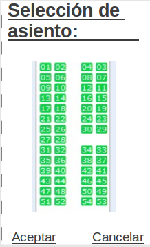

Esta sección es visible únicamente cuando se ha elegido el Extra Elegir asiento. Mediante una utilidad gráfica el usuario es capaz de seleccionar el asiento que desea ocupar en su vuelo.
Figura 2-6. Selección de asiento
